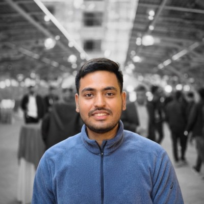

Data & AI Engineer — Cloud Data Pipelines, Lakehouse Architecture & Production AI Agents
Data Engineer with 3+ years designing scalable ETL/ELT pipelines and lakehouse platforms on Azure — and shipping the AI layer on top of them: RAG agents, Microsoft Copilot Studio bots, and Fabric Data Agents grounded on governed enterprise data. Databricks and SnowPro certified, plus Microsoft's Agentic AI Solutions Architect credential.

I'm a Data Engineer based in Noida with 3+ years building production data platforms on Azure — Databricks, Microsoft Fabric, Synapse and Data Factory — for a Fortune 100 technology client.
My work sits where reliability meets impact: designing medallion-architecture lakehouses, tuning Spark and SQL workloads across 500GB+ of enterprise data, and shipping the semantic models and Power BI dashboards that leadership actually makes decisions on. I care as much about a pipeline that recovers on its own at 3am as I do about the number it produces.
Lately I've been building the bridge between classic data engineering and GenAI — Microsoft Copilot Studio agents, Fabric Data Agents, and RAG pipelines grounded on governed Delta Lake data — because AI is only as trustworthy as the data platform underneath it. I also build with AI: GitHub Copilot and a Spec-Driven Development workflow where the spec leads and the agent implements against it.
I hold 7 certifications across Databricks, Snowflake, Microsoft Fabric and Azure, and I'm happiest on teams where engineers talk directly to stakeholders.
I build ETL/ELT on Fabric, Databricks and ADF with automated monitoring, configurable retries and AI-driven alerting — so failures surface before stakeholders notice.
Spark and SQL tuning across 500GB+ of enterprise data, cutting execution time and reporting latency without inflating cluster spend.
Copilot Studio agents, Fabric Data Agents and RAG retrieval grounded on governed Delta Lake data — plus GitHub Copilot and Spec-Driven Development in my own delivery loop.
I translate business questions into semantic models and KPI dashboards, and ship them with CI/CD so analytics teams can move independently.
AI is only as good as the data platform under it. I work on both halves — the governed lakehouse that grounds the model, and the agent layer users actually talk to.
Built conversational agents that answer business questions over enterprise data — custom topics, knowledge sources and actions wired to governed datasets, so answers stay grounded instead of hallucinated.
Natural-language analytics on Microsoft Fabric — agents configured over lakehouse and semantic models so stakeholders can ask questions directly instead of queueing a report request.
Retrieval-augmented generation on top of Delta Lake — chunking, embeddings, vector search and knowledge grounding, with the ingestion and refresh pipelines that keep the index current.
I ship with Spec-Driven Development: write the spec first, let GitHub Copilot generate implementation and tests against it, then review hard. Faster delivery without surrendering design intent or code quality.
Microsoft Agentic AI Business Solutions Architect (AB-100) — formal credential in designing agentic AI solutions on enterprise data.
Note: enterprise work at MAQ Software lives in private client repositories and cannot be shared publicly. The open-source project below is on GitHub with full source, architecture and notebooks.
A governed, queryable sales lakehouse built with PySpark + Delta Lake across bronze →
silver → gold layers, served through a FastAPI service backed by DuckDB
(delta_scan). Bronze absorbs product schema drift via superset-schema unions;
silver dedupes orders and reconciles four inconsistent date formats plus multi-currency values; gold publishes
fact_daily_revenue partitioned by date with idempotent single-day reprocessing
via Delta replaceWhere. Ships data-quality gates, 8 passing API tests, and a full production
orchestration, SLA and alerting design.
Python/SQL automation that walks repository files, extracts and cleans metadata, and loads processed results into data warehouse tables — replacing a manual, multi-day code review process with a scheduled job.
Retrieval-augmented agents deployed across two Microsoft Copilot Studio environments, automating internal work-item workflows and grounding generative answers in enterprise knowledge through vector-based retrieval.
Led migration of legacy data infrastructure to Microsoft Fabric, then built an automated monitoring layer with configurable timeouts, retry intervals and AI-driven alerting plus scheduled Teams and email reporting.
Supervised learning model for a predictive analytics use case — feature engineering, class-imbalance handling, hyperparameter tuning, and evaluation against precision/recall and ROC-AUC.
Verbatim feedback from client and internal leadership. Names, teams and company details are withheld under NDA.
I would like to formally highlight Ashish's outstanding professionalism and zeal to tackle complex issues. He brings disciplined curiosity to every problem — rapidly framing hypotheses and driving thorough Root Cause Analysis to resolution.
Ashish partners seamlessly across functions, communicates clearly, and translates findings into practical guardrails and improvements. His stakeholder-first mindset, bias for action, and steady ownership consistently accelerate recovery, reduce repeat incidents, and strengthen operational clarity.
Case in point, we faced a major escalation this week for a critical customer data platform; Ashish worked end-to-end to unblock the team and restore confidence. He is a genuine value add, elevating outcomes every day.
I am delighted to share some fantastic news with you all. Ashish has once again worked his magic and we have finally launched the Stakeholder Dashboard (MVP) after numerous enhancements and iterations. Ashish's technical expertise and business acumen were instrumental in this achievement.
His ability to swiftly implement changes to the cube and stay on top of performance enhancements, so that I could present to stakeholders and the leadership team for feedback, has been remarkable.
We have an exciting pipeline of work ahead of us, and I am truly thrilled about the game-changing AI-enabled insights we can deliver with Ashish's support. I want to express my heartfelt gratitude for your invaluable partnership — it has been an absolute pleasure working with you.
Good job Ashish, amazing feedback from the customer. Keep up the good work.
Awesome work Ashish.
Chitkara University, Solan, Himachal Pradesh · Aug 2020 – May 2024
Open to conversations about data engineering, cloud platforms, and AI-enabled data infrastructure. Drop a message below and I'll get back to you.